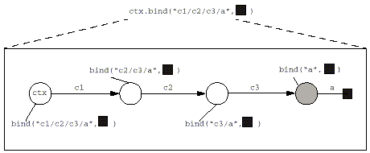
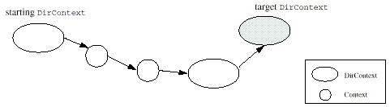
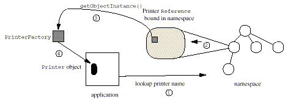
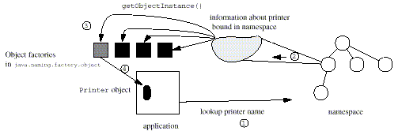
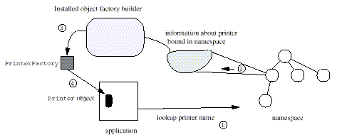

The JNDI SPI provides the means by which developers can write different naming and directory service providers and make them available so that the corresponding services are accessible from applications that use the JNDI API. A service provider is a set of modules that together satisfy JNDI API requests. In addition, because JNDI allows the use of names that span multiple namespaces, one service provider implementation may need to interact with another in order to complete an operation. The SPI provides methods that allow different provider implementations to cooperate to complete client JNDI operations.
This document describes the components of the SPI and explains how developers can build service providers for JNDI. It is assumed that the reader is familiar with the contents of the JNDI API document.
All service provider developers should read the "Security Considerations" section of the JNDI API document. It contains important issues that all developers using JNDI, especially those writing service providers, should consider.
There are several types of
implementations that sit beneath the JNDI API. A service provider
contains at a minimum a context implementation. A context
implementation implements the Context interface or any
of its subinterfaces, such as DirContext,
EventContext, or LdapContext. The
complexity of the implementation depends primarily on the
complexity of the underlying service, and secondarily on the number
of JNDI features that the implementation supports. Chapter 2 describes the details of
building a context implementation.
A context implementation can be accessed in different ways. The most common way is to access it from the initial context. Chapter 3 describes two ways that a context implementation can be accessed from the initial context: via an initial context factory and a URL context factory.
The JNDI architecture defines components/implementations that can be used to augment the behavior of context implementations. This allows users and applications to customize the implementation. These components are supported through factories. JNDI defines three types of factories and provides SPI methods that make use of them. These factories are described in Chapter 4.
The JNDI SPI is contained
in the javax.naming.spi package. The following
sections provide an overview of the SPI. For more details on the
SPI, see the corresponding javadoc.
The information in this graphic is available in the API documentation.
The
NamingManager class contains static methods that
perform provider-related operations. For example, it contains
methods to create instances of objects using
Reference, to obtain an instance of the initial
context using the java.naming.factory.initial
property, and to install ObjectFactoryBuilder and
InitialContextFactoryBuilder. The
DirectoryManager class provides similar static methods
for DirContext related operations.
InitialContextFactory is the interface for creating an
initial context instance. See Section 3.1 for more details.
InitialContextFactoryBuilder is the interface for
creating InitialContextFactory instances. See Section 3.3 for more details.
ObjectFactory
is the interface for supporting creation of objects using
information stored in the namespace. DirObjectFactory
is a subinterface of ObjectFactory for use by context
implementations that implement the DirContext
interface. See Section 4.1
for more details.
ObjectFactoryBuilder is the interface for creating
object factories. See Section
4.1.4 for more details.
StateFactory
is the interface for supporting converting objects into storable
formats supported by the naming/directory service.
DirStateFactory is a subinterface of
StateFactory for use by context implementations that
implement the DirContext interface.
DirStateFactory.Result is a class for holding a pair
of java.lang.Object and Attributes that
is returned by DirStateFactory.getStateToBind(). See
Section 4.2 for more
details.
The Resolver
interface defines a method for providers to implement that allows
them to participate in a federation for supporting extended
interfaces to Context. See "Resolving Through to Subinterfaces of
Context" on page 10 for more details.
ResolveResult
is the return value of calling
Resolver.resolveToClass(). It contains the object to
which resolution succeeded, and the remaining name yet to be
resolved.
One of the basic tasks in
building a service provider is to define a class that implements
the Context interface or any of its subinterfaces.
This class is called a context implementation. The
following guidelines should be used for developing a context
implementation.
In general, any object
passed as a parameter to methods in the Context
interface (or subinterfaces) and
NamingManager/DirectoryManager utility
methods is owned by the caller. In many cases, the parameter
eventually reaches a context implementation. Because the caller
owns the object, the context implementation is prohibited from
modifying the object. Furthermore, the context implementation is
allowed to maintain a pointer to the object only for the duration
of the operation and not beyond. If a context implementation needs
to save the information contained in a parameter beyond the
duration of the operation, it should maintain its own copy.
For purposes of parameter
ownership, an operation on a context instance is not considered to
have completed while any referrals generated by that operation are
still being followed, or if the operation returns a
NamingEnumeration, while the enumeration is still in
use.
A context instance need not be reentrant. Two threads that need to access the same context instance concurrently should synchronize amongst themselves and provide the necessary locking.
However, different context instances must be safe for concurrent multithreaded access. That is, two threads each operating concurrently on their respective context instance should not need to synchronize their access. For example, even though two contexts might share the same resources (such as the same connection), it must be possible (and safe) for two separate threads to operate on each of those contexts without the threads having to do any explicit synchronization.
For purposes of
concurrency control, an operation on a context instance is not
considered to have completed while any referrals generated by that
operation are still being followed, or if the operation returns a
NamingEnumeration, while the enumeration is still in
use.
The context implementation
defines implementations for each of the methods in the
Context interface or subinterfaces that the
implementation supports.
If a method is not
supported, it should throw
OperationNotSupportedException.
For methods in the
Context interface or subinterfaces that accept a name
argument (either as a String or a Name),
an empty name denotes the current context. For example, if an empty
name is supplied to lookup(), that means to return a
new instance of the current context. If an empty name is supplied
to list(), that means to enumerate the names in the
current context. If an empty name is supplied to
getAttributes(), that means to retrieve the attributes
associated with this context.
Appendix A contains an example context implementation that implements a flat, in-memory namespace.
JNDI encourages providers
to supply implementations of the Context and its
subinterfaces that are natural and intuitive for the Java
application programmer. For example, when looking up a printer name
in the namespace, it is natural for the programmer to expect to get
back a printer object on which to operate.
Context ctx = new InitialContext(); Printer prt = (Printer)ctx.lookup(somePrinterName); prt.print(someStreamOfData);
Similarly, when storing an application's object into the underlying service, it is most portable and convenient if the application does not have to know about the underlying data representation.
However, what is bound in the underlying directory or naming services typically are not objects in the Java programming language but merely reference information which can be used to locate or access the actual object. This case is quite common, especially for Java applications accessing and sharing services in an existing installed base. The reference in effect acts as a "pointer" to the real object. In the printer example, what is actually bound might be information on how to access the printer (e.g., its protocol type, its server address). To enable this easy-to-use model for the application developer, the context implementation must do the transformation of the data to/from the underlying service into the appropriate objects in the Java programming language.
There are different ways
to achieve this goal. One context implementation might have access
to all the implementation classes of objects that a directory can
return; another context implementation might have a special class
loader for locating implementation classes for its objects. JNDI
provides the Reference class as a standard way of
representing references. Applications and context implementations
are encouraged to use this class, rather than invent separate
mechanisms on their own. However, this does not preclude context
implementations from using their own mechanisms for achieving the
same goal.
JNDI provides utilities for context implementations to use when reading/storing objects in the Java programming language in a format-independent way to the underlying service. This section describes these utilities. These utilities interact with components called object and state factories that do the actual transformations. These factories are described in Chapter 4.
JNDI provides the following methods that context implementations should use to transform data read from the underlying service into objects in the Java programming language:
Object NamingManager.getObjectInstance(Object refInfo,
Name name,
Context nameCtx,
Hashtable env)
throws Exception;
Object DirectoryManager.getObjectInstance(Object refInfo,
Name name,
Context nameCtx,
Hashtable env,
Attributes attrs)
throws Exception;
refInfo is the data (representing the object) read
from the underlying service. name is the name of the
object while nameCtx is the context in which to
resolve name. The
name/nameCtx pair can be used to obtain
more information about the object than is available from
refInfo. env is the environment of the
context from which getObjectInstance() is being
invoked. attrs is the collection of attributes read
from the directory about the object, usually in the same request
that was used to get refInfo. It might not be the
complete collection of attributes if such was not requested.
The method in the
NamingManager class should be used by context
implementations that implement the Context interface,
while the method in the DirectoryManager class should
be used by context implementations that implement the
DirContext interface.
When constructing objects
to be returned for the following methods, the context
implementation should call getObjectInstance(), or its
own mechanism for generating objects from the bound information, if
it wants this feature to be enabled in their contexts. (String
overloads not shown.)
javax.naming.Context.lookup(Name name)
javax.naming.Context.lookupLink(Name name)
javax.naming.Binding.getObject()
javax.naming.directory.SearchResult.getObject()
For Binding
and SearchResult, the context implementation should
either pass an object that is the result of calling
getObjectInstance() or its equivalent to the
constructor, or override the default implementation of
Binding and SearchResult so that their
getObject() implementations call
getObjectInstance() or its equivalent before
returning.
Here is an example.
Suppose printers are represented in the namespace using
References. To turn a printer Reference
into a live Printer object, the context implementation
would use the NamingManager.getObjectInstance()
method. In this way, the underlying service need not know anything
specific about printers.
Object lookup(Name name) {
...
Reference ref = <some printer reference looked up from naming service>;
return NamingManager.getObjectInstance(ref, name, this, env);
}
In another example,
suppose printers are represented in the directory as a collection
of attributes. To turn a printer's directory entry into a live
Printer object, the context implementation would use
DirectoryManager.getObjectInstance().
Object lookup(Name name) {
...
Attributes attrs = <read attributes from directory>;
Reference ref = <construct reference from attributes>;
return DirectoryManager.getObjectInstance(ref, name, this,
env, attrs);
}
JNDI provides the following methods that context implementations should use to transform an object before storing it in the underlying service:
Object NamingManager.getStateToBind(
Object obj,
Name name,
Context nameCtx,
Hashtable env)
throws NamingException;
DirStateFactory.Result DirectoryManager.getStateToBind(
Object obj,
Name name,
Context nameCtx,
Hashtable env,
Attributes attrs)
throws NamingException;
obj is the
object to be stored in the underlying service. name is
the name of the object while nameCtx is the context in
which to resolve name. The
name/nameCtx pair can be used to obtain
more information about the object than is available from
obj. env is the environment of the
context from which getStateToBind() is being invoked.
attrs is the collection of attributes that is to be
bound with the object. DirStateFactory.Result is a
class that contains an object and a collection of attributes.
The method in the
NamingManager class should be used by context
implementations that implement the Context interface,
while the method in the DirectoryManager class should
be used by context implementations that implement the
DirContext interface.
Before storing an object
supplied by the application, the context implementation should call
getStateToBind(), or its own mechanism for generating
information to be bound, if it wants this feature to be enabled in
their contexts. (String overloads not shown.)
javax.naming.Context.bind(Name name, Object o) javax.naming.Context.rebind(Name name, Object o) javax.naming.DirContext.bind(Name name, Object o, Attributes attrs) javax.naming.DirContext.rebind(Name name, Object o, Attributes attrs)
Here's an example of how a
Context implementation supports
Context.bind:
// First do transformation
obj = NamingManager.getStateToBind(obj, name, ctx, env);
// Check for Referenceable
if (obj instanceof Referenceable) {
obj = ((Referenceable)obj).getReference();
}
if (obj instanceof Reference) {
// store as ref
} else if (obj instanceof Serializable) {
// serialize
} else {
...
}
Here's an example of how a
DirContext implementation supports
DirContext.bind:
// First do transformation
DirStateFactory.Result res = DirectoryManager.getStateToBind(
obj, name, ctx, env, inAttrs);
obj = res.getObject();
Attributes outAttrs = res.getAttributes();
// Check for Referenceable
if (obj instanceof Referenceable) {
obj = ((Referenceable)obj).getReference();
}
if (obj instanceof Reference) {
// store as ref and add outAttrs
} else if (obj instanceof Serializable) {
// serialize and add outAttrs
} else if (obj instanceof DirContext) {
// grab attributes and merge with outAttrs
} else {
...
}
As shown in these
examples, a context implementation might be able to store different
types of objects (Reference,
Serializable, and DirContext). If the
context implementation cannot store Referenceable
objects directly and getStateToBind() returns such an
object, the context implementation should subsequently call
Referenceable.getReference() and store the resulting
Reference instead.
If a context implementation can store different types of objects, it should follow this order for the following common types:
This order is recommended because it is most likely to capture the intent of the caller of thebind()/rebind() method. For example, a
Reference is Serializable, so if you
performed the Serializable check first, no
Reference objects would ever be stored in the
reference format (that is, they would all be serialized).
When a context is given a string name argument, the name represents a composite name that may span multiple namespaces, or it may have only a single compound name component (which in turn may be made up of one or several atomic names) that belongs to a single namespace. The context implementation must determine which part of the name is to be resolved/processed in its context and pass the rest onto the next context. This may be done syntactically by examining the name, or dynamically by resolving the name.
When a context is given a
Name argument, if it is an instance of
CompositeName, then it will be treated as a composite
name. Otherwise, it will be treated as a compound name that is
implemented by the CompoundName class or some other
compound name implementation.
A context participates in
a federation by performing the resolution phase of all of the
context operations. The lookup() method must always be
supported. Support for other methods is optional, but if the
context is to participate in a federation, then the resolution
implicit in all operations must be supported.
Figure 1: Example of Resolving through Intermediate Contexts to Perform a bind().
 For example, suppose a
context does not support the bind() operation. When
that context is being used as an intermediate context for
bind(), it must perform the resolution part of that
operation to enable the operation to continue to the next context.
It should only throw OperationNotSupportedException if
it is being asked to create a binding in its own context. Figure 1
shows an example of how the bind() operation is passed
through intermediate contexts to be performed in the target
context.
To invoke a
DirContext method (such as
getAttributes()), the application first obtains an
initial DirContext, and then perform the operation on
the DirContext.
DirContext ctx = new InitialDirContext(); Attributes attrs = ctx.getAttributes(someName);From the context implementation's perspective, in order to retrieve the attributes,
getAttributes() might need to traverse
multiple naming systems. Some of these naming systems only support
the Context interface, not the DirContext
interface. These naming systems are being used as intermediaries
for resolving towards the target context. The target context must
support the DirContext interface. Figure 2 shows an
example of this.
Figure 2: Example of Resolving Through Intermediate non-DirContexts
 In order for intermediate
naming systems to participate in the federation for extensions of
Context, they must implement the Resolver
interface. The Resolver interface is used by the JNDI
framework to resolve through intermediate contexts that do not
support a particular subinterface of Context. It
consists of two overloaded forms of the method
resolveToClass(). This method is used to partially
resolve a name, stopping at the first context that is an instance
of the required subinterface. By providing support for this method
and the resolution phase of all methods in the Context
interface, a context implementation can act as an intermediate
context for extensions (subinterfaces) of Context.
public interface Resolver {
public ResolveResult resolveToClass(Name name, Class contextType)
throws NamingException;
public ResolveResult resolveToClass(String name,
Class contextType)
throws NamingException;
}
The resolution of a (multicomponent) composite name proceeds from one naming system to the next, with the resolution of the components that span each naming system typically handled by a corresponding context implementation. From a context implementation's point of view, it passes the components for which it is not responsible to the (context implementation of the) next naming system.
There are several ways in
which the context implementation for the next naming system may be
located. It may be done explicitly through the use of a
junction, where a name in one naming system is bound to a
context (or a Reference to a context) in the next
naming system. For example, with the composite name
"cn=fs,ou=eng/lib/xyz.zip", the LDAP name "cn=fs,ou=eng" might
resolve to a file system context in which the name "lib/xyz.zip"
could then be resolved.
Alternately, the next
naming system may be located implicitly. For example, a
context implementation may choose the next naming system based upon
service-specific knowledge of the object that it has resolved. For
example, with the composite name "ldap.wiz.com/cn=fs,ou=eng", the
DNS name ldap.wiz.com might name a DNS entry. To get
the next naming system beyond DNS, the DNS context implementation
might construct a context using SRV resource records found in that
entry, which in this case, happens to name an LDAP context. When
the next naming system is located in this fashion, JNDI composite
name separator is used to denote the boundary from one naming
system to the next, and is referred to as the implicit next
naming system pointer.
However the next naming system is located, the context implementation must hand the next naming system the remaining portion of the composite name to resolve.
In performing an operation
on a name that spans multiple namespaces, a context in an
intermediate naming system needs to pass the operation onto the
next naming system. The context does this by first constructing a
CannotProceedException containing information
pinpointing how far it has proceeded. In so doing it sets the
resolved object, resolved name, remaining name, and environment
parts of the exception.2 (In the
case of the Context.rename() method, it also sets the
"resolved newname" part.)
It then obtains a
continuation context from JNDI by passing the
CannotProceedException to static method
NamingManager.getContinuationContext()
public class NamingManager {
public static Context getContinuationContext(
CannotProceedException e) throws NamingException;
...
}
The information in the
exception is used by getContinuationContext() to
create the context instance in which to continue the operation.
To obtain a continuation
context for the DirContext operations, use
Directory-Manager.getContinuationDirContext().
public class DirectoryManager {
public static getContinuationDirContext(
CannotProceedException e) throws NamingException;
...
}
Upon receiving the continuation context, the operation should be continued using the remainder of the name that has not been resolved.
For example, when
attempting to continue a bind() operation, the code in
the context implementation might look as follows:
public void bind(Name name, Object obj) throws NamingException {
...
try {
internal_bind(name, obj);
...
} catch (CannotProceedException e) {
Context cctx = NamingManager.getContinuationContext(e);
cctx.bind(e.getRemainingName(), obj);
}
}
In this example,
bind() depends on an internal method,
internal_bind(), to carry out the actual work of the
bind and to throw a CannotProceedException when it
discovers that it is going beyond this naming system. The exception
is then passed to getContinuationContext() in order to
continue the operation. If the operation cannot be continued, the
continuation context will throw the
CannotProceedException to the caller of the original
bind() operation.
In some federation configurations, the result of resolution in one naming system does not indicate which is the next naming system. The only conclusion that the context implementation can draw is that resolution has terminated in the current naming system and should proceed to the next naming system.
For example, suppose the composite name "lib/xyz.zip/part1/abc" consists of two parts: "lib/xyz.zip", which names a file in ZIP format, and "part1/abc", which names an entry within the ZIP file. Although the resolution of "lib/xyz.zip" results in a file object, the desired result is a context in which to resolve names of ZIP entries. Similarly, another composite name could name an entry within a file in "tar" format, and the desired result of the resolution of the file component of the composite name would be a context in which to resolve tar entries.
In effect, any type of context might be federated beneath the file system namespace depending on the format of the files. Such relationships should be symmetric: it should be possible for the ZIP file context and other similar contexts to federate beneath other, non-file system namespaces. Furthermore, developers writing the file system context implementation and those writing the context implementations for the ZIP file context, the tar file context, or a context for some yet-to-be defined format, should be able to work independently.
To support this type of
federation, JNDI defines a special form of Reference
called an nns reference ("nns" stands for "next naming
system"). This Reference has an address with type
nns. The address contents is the resolved object (in
the above example, the ZIP file). Continuing with the file system
example, the file system context implementation might create the
nns reference as follows:
RefAddr addr = new RefAddr("nns") {
public Object getContent() {
return theFile;
}
};
Reference ref = new Reference("java.io.File", addr);
Next, the context
implementation constructs a CannotProceedException (as
with the junction case) by using the nns reference as the resolved
object, and a resolved name consisting of the resolved file name
and an empty component. The empty component is being used as an
implicit next naming system pointer and indicates that the
resolution has succeeded to the point of resolving the next naming
system. (Notice how the values of the resolved object and resolved
name are matched.) The context impementation then passes the
CannotProceedException to
getContinuationContext().
As with any resolved
object in a CannotProceedException,
getContinuationContext() searches for a context
implementation that accepts this nns reference. The ZIP file
context implementation, for instance, might accept an nns reference
and other information provided, such as the name of the file
(relative to a given context). If the context implementation
determines that the file is a ZIP file, it would then construct a
context for resolving names within that file.
Central to the JNDI SPI's
framework for federation is the
CannotProceedException. A
Cannot-ProceedException contains information such as
the resolved name/object and remaining name, inherited from the
NamingException superclass. In addition, a
CannotProceedException also contains fields for the
"alt" name and "alt" name context. While the resolved name from
NamingException is the full composite name (relative
to the starting context of the operation), alt name is the resolved
name relative to the alt name context. That is, alt name might not
necessarily be the same as the resolved name. Alt name and alt name
context are used as arguments to
NamingManager/DirectoryManager.getObjectInstance().
They allow the factories that are called by this method to obtain
more information about the resolved object (for example, it could
be used to get a special attribute about the object). These
factories are described in Chapter 4.
While the emphasis of the JNDI SPI framework is on "looking forward" and trying to find the next naming system, some context implementations, once located, need to "look back" the resolution chain to obtain contextual information. For example, a particular context implementation that is federated off of a host naming system might be designed such that the only means by which it can find out host information is to ask its (possibly not immediate) superior naming system. To do that, it needs contextual information-information about how the resolution proceeded to its current point.
Summarizing earlier
discussions on federation, when performing an operation on a name
that spans multiple namespaces, the context implementation first
constructs a CannotProceed-Exception containing
information pinpointing how far it has proceeded. It then obtains a
continuation context from JNDI by calling
getContinuationContext(). To support the retrieval of
contextual information, getContinuationContext()
automatically adds the environment property
java.naming.spi.CannotProceedException, with the value
of the Cannot-ProceedException argument, to the
continuation context's environment. This property is inherited by
the continuation context and may be used by that context's
implementation to inspect the fields of the exception.
LDAP-style directory
services support the notion of referrals for redirecting a
client's request to another server. A referral differs from the
federation continuation mechanism described earlier in that a
referral may be presented to the JNDI client, who then decides
whether to follow it, whereas a CannotProceedException
should be returned to the client only when no further progress is
possible. Another difference is that an individual context
implementation offers the capability of continuing the operation
using the referral (and itself determines the mechanism for doing
so). In a federation, the mechanism of continuation is beyond the
scope of individual context implementations: individual context
implementations benefit from the common federation mechanism
provided by the JNDI SPI framework.
A context implementation
that supports referrals defines a subclass of
ReferralException and provides implementations for its
abstract methods. getReferralContext() returns a
context at which to carry on the operation, and
getReferralInfo() returns information on where the
referral leads to, in a format appropriate to the context
implementation.
The environment property
java.naming.referral specifies how the context
implementation should treat referrals. If the context
implementation is asked to throw an exception when a referral is
encountered, or if the context implementation encounters problems
following a referral, it throws a ReferralException to
the application. To continue the operation, the application
re-invokes the method on the referral context using the same
arguments it supplied to the original method. The following code
sample shows how ReferralException may be used by an
application:3
while (true) {
try {
bindings = ctx.listBindings(name);
while (bindings.hasMore()) {
b = (Binding) bindings.next();
...
}
break;
} catch (ReferralException e) {
ctx = e.getReferralContext();
}
}
This convention of re-invoking the method using the original arguments is a simple one for applications to follow. This places the burden on the implementation of the ReferralException to supply enough information to the implementation of the referral context for the operation to be continued. Note that this will likely render some of the arguments passed to the re-invoked operation superfluous. The referral context implementation is free to ignore any redundant or unneeded information.
It is possible for an operation to return results in addition to a referral. For example, when searching a context, the server might return several results in addition to a few referrals as to where to obtain further results. These results and referrals might be interleaved at the protocol level. If referrals require user interaction (i.e., not followed automatically), the context implementation should return the results through the search enumeration first. When the results have been returned, the referral exception can then be thrown. This allows a simple programming model to be used when presenting the user with a clear relationship between a referral and its set of results.
JNDI defines the
Attribute interface for representing an attribute in a
directory. An attribute consists of an attribute identifier (a
string) and a set of attribute values, which can be any object in
the Java programming language. There are also methods defined in
Attribute for obtaining the attribute's definition and
syntax definition from the directory's schema.
public class Attribute {
public DirContext getAttributeDefinition() throws NamingException;
public DirContext getAttributeSyntaxDefinition()
throws NamingException;
...
}
The utility class,
BasicAttribute, does not provide useful
implementations for these methods. A directory context
implementation that has support for such schema information should
provide implementations of Attribute that implement
these two methods based on its schema mechanisms, perhaps by
subclassing BasicAttribute and overriding these two
methods. The context implementation should then return instances of
these subclasses when asked to return instances of
Attribute. The context implementation, when it
receives an Attribute instance that do not have
meaningful implementations of these two methods, should use
reasonable defaults to determine the attribute's definition and
syntax, using information such as the attribute values' class names
or conventions used for the attribute identifier.
The
DirContext interface contains schema-related
methods:
public class DirContext {
...
public DirContext getSchema(Name name) throws NamingException;
public DirContext getSchema(String name) throws NamingException;
public DirContext getSchemaClassDefinition(Name name)
throws NamingException;
public DirContext getSchemaClassDefinition(String name)
throws NamingException;
}
getSchema()
returns the schema tree for the named object, while
getSchemaClassDefinition() returns a context
containing schema class definitions for the named object. Some
systems have just one global schema and, regardless of the value of
the name argument, will return the same schema tree.
Others support finer grained schema definitions, and may return
different schema trees depending on which context is being
examined.
A context implementation
supports event notification by providing implementation for the
methods in the
EventContext/EventDirContext interfaces.
The event model advocated by these interfaces can be readily
supported using a multithreaded model. When an application uses
addNamingListener() to register a listener with a
context, the context records the requests and takes action to
collect information required to generate the events. When the
context eventually receives information to generate the events, it
fires the events to the listener. The thread that does the
registration is typically different from the thread that runs the
listener. The context implementation typically uses a thread that
it has created and manages to run the listener method. When one
event is dispatched to multiple listeners, the context
implementation may choose to (and is generally encouraged) to
execute the listener methods concurrently in separate threads.
The
addNamingListener() methods accept an instance of
NamingListener. The instance might implement one or
more subinterfaces of NamingListener. If the listener
implements more than one subinterface, the context implementation
should try to conserve resources required to satisfy the
registration. For example, an implementation might be able to
submit a single request to the server that captures all of the
requests of the subinterfaces.
Where possible, the
context implementation should fire a
NamingExceptionEvent to a listener if the context will
be unable to fire further events and then automatically deregister
the listener. For example, if the connection to the server is
broken subsequent to the registration of the listener and no
information will be available to fire events, the context should
fire a NamingExceptionEvent to the listener.
Each instance of
Context (or its subinterfaces) can have associated
with it an environment which contains preferences
expressed by the application of how it would like to access the
services offered by the context. Examples of information found in
an environment are security-related information that specify the
user's credentials and desired level of security
(none, simple, strong), and
configuration information, such as the server to use. See Chapter 6
and Appendix A of the JNDI API document for more
details about environment properties.
Environment properties are defined generically in order to ensure maximum portability. Individual service providers should map these generic properties to characteristics appropriate for their service. Properties that are not relevant to a provider should be recorded and silently ignored. The environment may also be used for storing service provider-specific properties or preferences, in which case their applicability across different providers is limited.
See Section 6.1 in the
JNDI API document for a description of how
environment properties are named. Service provider-specific
properties should have a prefix that reflects their uniqueness to
the provider. A common practice is to use the package name of the
service provider as the prefix. For example, since Sun's LDAP
provider is primarily contained in the package
com.sun.jndi.ldap, properties specific to Sun's LDAP
provider have the prefix "com.sun.jndi.ldap.".
When creating an initial
context (either using the constructors from
InitialContext or its subclasses), the application can
supply an environment as a parameter. The parameter is represented
as a Hashtable or any of its subclasses (e.g.,
Properties). The JNDI class library augments the data
from this parameter with data from other sources (see Chapter 6 in
the JNDI API document) and passes this to the
context implementation.
Like all other parameters,
the environment parameter received by a context implementation is
owned by the caller. The context implementation should make a copy
of the environment parameter it gets or otherwise take steps to
ensure that changes by the caller to the parameter would not affect
what the context implementation sees and vice versa. Note also that
if the environment parameter is a Properties instance,
enumeration and Hashtable.get() on the parameter only
examine the top-level properties (not any nested defaults). This is
the expected behavior. The context implementation is not expected
to retrieve or enumerate values in the Properties
instance's nested defaults.
The JNDI library is responsible for merging properties from different sources, such as the environment parameter to the initial context, resource files, and, where appropriate, system properties and applet parameters (see the JNDI API document, Chapter 6). The context implementation typically just reads the property it needs from the environment which it was supplied. There is seldom a need for a context implementation to consult other sources.
The environment is inherited from parent to child as the context methods proceed from one context to the next. The entire environment of a context instance is inherited by the child context instances, regardless of whether certain properties within the environment are ignored by a particular context.
A context implementation
must pass on the environment from one context instance to the next
in order to implement this "inheritance" trait of environments.
Within one context implementation it can do so by passing the
environment as an argument to the Context constructor,
or to the
NamingManager/DirectoryManager.getObjectInstance()
method for creating Context instances.
Across context
implementations in a federation, this is supported by passing the
environment as part of the CannotProceedException
parameter of
NamingManager.getContinuationContext()/DirectoryManager.getContinuationDirContext(),
which in turn will use this environment when creating an instance
of the context in which to continue the operation.
Inheritance can be implemented in any way as long as it preserves the semantics that each context has its own view of its environment. For example, a copy-on-write implementation could be used to defer copying of the environment until it is absolutely necessary.
The environment of a
context can be updated via the use of the addToEnvironment()
and removeFromEnvironment() methods in the
Context interface.
public interface Context {
...
public Object addToEnvironment(String propName, Object propVal)
throws NamingException;
public Object removeFromEnvironment(String propName)
throws NamingException;
}
These methods update the
environment of this instance of Context. An
environment property that is not relevant to the context
implementation is silently ignored but maintained as part of the
environment. The updated environment affects this instance of
Context, and will be inherited by any new child
Context instances, but does not affect any
Context instances already in existence. A lookup of
the empty name on a Context will return a new
Context instance with an environment inherited as with
any other child.
See Section 6.6 in the JNDI API document for details.
Each service provider has an optional resource file that contains properties specific to that provider. The name of this resource is:
[prefix/]jndiprovider.propertieswhere prefix is the package name of the provider's context implementation(s), with each period (".") converted to a slash ("/"). For example, suppose a service provider defines a context implementation with class name
com.sun.jndi.ldap.LdapCtx. The provider resource for
this provider is named
com/sun/jndi/ldap/jndiprovider.properties.
The JNDI class library will consult this file when it needs to determine the value of a property, as described in Section 6.5.2 in the JNDI API document.
When the service provider needs to determine the value of a property, it will generally take that value directly from the environment. The service provider may define provider-specific properties to be placed in its own provider resource file. In that case it needs to read them from its property resource file and merge them in a way consistent with the algorithm described in Section 6.5.2 in the JNDI API document.
For a context implementation that uses a client/server protocol, there is not necessarily a one-to-one mapping between a context and a connection between the client and the server. JNDI is a high-level API that does not deal directly with connections. It is the job of the context implementation to do any necessary connection management. Hence, a single connection may be shared by multiple context instances, and a context implementation is free to use its own algorithms to conserve connection and network usage. Thus, when a method is invoked on the context instance, the context implementation might need to do some connection management in addition to performing the requested operation.
The
Context.close() and
NamingEnumeration.close() methods can be used by
applications to provide hints to the context implementation as to
when to free connection-related resources. A context implementation
may choose to (and is generally encouraged to) take other measures
to garbage-collect and conserve its connection-related
resources.
Some environment properties affect a context's connection. For example, if the application changes the security-related properties, the context implementation might need to modify or create a new connection using those updated properties. If the connection was being shared by other contexts prior to the change, the connection change should not affect contexts whose properties have not been updated.
Since all naming methods are performed relative to a context, an application needs a starting context in order to invoke them. This starting context is referred to as the initial context. The bindings in the initial context are determined by policies set forth by the initial context implementation, perhaps using standard policies for naming global and enterprise-wide namespaces. For example, the initial context might contain a binding to the Internet DNS namespace, a binding to the enterprise-wide namespace, and a binding to a personal directory belonging to the user who is running the application.
An application obtains an initial context by making the following call:
Context ctx = new InitialContext();An alternate constructor allows an environment to be passed as an argument. This allows the application to pass in preferences or security information to be used in the construction of the initial context.
Hashtable env = new Hashtable();4 env.put(Context.SECURITY_PRINCIPAL, "jsmith"); env.put(Context.SECURITY_CREDENTIALS, "xxxxxxx"); Context ctx = new InitialContext(env);
Subsequent to getting an
initial context, the application can invoke Context
methods.
Object obj = ctx.lookup("this/is/a/test");
The
InitialContext class (and subclasses) selects an
implementation using a default algorithm that can be overridden by
installing an initial context factory builder (described
below).
The
InitialDirContext is an extension of
InitialContext. It is used for performing directory
operations using the initial context. The
InitialLdapContext class is an extension of
InitialDirContext. It is used for performing special
LDAP v3 operations using the initial context. The algorithms and
policies described in this section also apply to
InitialDirContext and InitialLdapContext.
Places where DirContext/LdapContext is required
instead of Context have been noted.
An initial context
factory is a class that creates an instance of a context that
has been implemented following the guidelines outlined in Chapter 2. The factory is used by the
InitialContext class (or subclass) constructor.
Given an environment, the
factory returns an instance of Context (or its
subinterfaces).
public interface InitialContextFactory {
public Context getInitialContext(Hashtable env)
throws NamingException;
}
Appendix A contains an
example of an InitialContextFactory.
Once the context instance
has been created, when a method is invoked on
InitialContext by using a non-URL name (see below),
the method is forwarded and invoked on that context instance.
JNDI selects the initial
context implementation to use by using the property
java.naming.factory.initial. This property contains
the fully-qualified class name of an initial context factory. The
class must implement the InitialContextFactory
interface and have a public constructor that does not take any
arguments. JNDI will load the initial context factory class and
then invoke getInitialContext() on it to obtain a
Context instance to be used as the initial
context.
An application that wants
to use a particular initial context must supply the
java.naming.factory.initial property in the
environment passed to the InitialContext (or subclass)
constructors, or via resource files, system properties, or applet
parameters.
When the property
java.naming.factory.initial is set to a
non-null value, the InitialContext (and
subclass) constructors will try to load and instantiate an initial
context factory, which will then create a context instance. If the
factory or context cannot be created, for example as a result of an
authentication problem, the initial context factory can throw an
exception to indicate this problem. Note however that it is up to
the context implementation when it verifies and indicates
to users of the initial context any environment property- or
connection- related problems. It can do so lazily-delaying until an
operation is performed on the context, or eagerly, at the time the
context is created.
If the property
java.naming.factory.initial is not set, no attempt
will be made to create an underlying context for the initial
context. The initial context is still useful, for instance, for
processing URL names, as described next.
If a URL5 string is passed to the initial
context, it will be resolved using the corresponding URL
context implementation. This feature is supported by the
InitialContext class (and subclasses) and is
independent of the setting of the
java.naming.factory.initial environment property.
This feature allows applications to use the initial context to reach any namespace for which a URL context implementation has been made available. For example, the following code lists an LDAP namespace from the initial context:
new
InitialContext().list("ldap://lserver/ou=eng,o=wiz,c=us");
A URL string has the following format:
For example, an LDAP URL string has the scheme id "ldap"; a file URL has the scheme id "file".
A URL context
implementation is a class that implements the Context
interface (and possibly some subinterfaces) and accepts name
arguments that are URL strings of the scheme that it supports. For
example, an LDAP URL context accepts "ldap" URL strings.
When a URL string name is
passed to a URL context, the context methods that accept
String treat the name as a URL with the syntax defined
by the URL scheme. When a Name object in which the
first component is a URL string name is passed to a URL context,
the first component is treated as a URL string, and the rest is
used for federation (that is, resolution of the first component
will indicate which naming system to use to resolve the rest). The
Name instance should be a CompositeName;
otherwise, an InvalidNameException should be
thrown.
Name arguments that are
not URL strings, and URL strings with an inappropriate scheme id
should be rejected with an InvalidNameException.
A URL context factory is a class (actually a special type object factory (see Section 4.1)) that creates an instance of a URL context for URLs of one or more schemes.
When the
InitialContext class receives a URL string as a name
argument, it will look for a URL context factory by using the
following algorithm. The environment property
java.naming.factory.url.pkgs contains a
colon-separated list of package prefixes. The factory's class name
is constructed by using the following rule:
package_prefix +
"." + scheme_id + "." +
scheme_idURLContextFactory
for each package prefix
listed in the property. The default package prefix
com.sun.jndi.url is appended to the end of the
list.
For example, if the URL is
"ldap://somehost:389" and
java.naming.factory.url.pkgs contains
"com.widget:com.wiz.jndi", the
InitialContext class will attempt to locate the
corresponding factory class by loading the following classes until
one is successfully instantiated:
com.widget.ldap.ldapURLContextFactory com.wiz.jndi.ldap.ldapURLContextFactory com.sun.jndi.url.ldap.ldapURLContextFactoryThe factory class implements the
ObjectFactory
interface (see "URL Context
Factory" on page 31) and has a public constructor that
takes no arguments. The InitialContext class passes
the scheme id as the resolved object to the factory's
getObjectInstance() method, which in turn creates a
URL context for the URL scheme. The URL context will then be used
to carry out the originally intended Context or
DirContext operation on the URL supplied to
InitialContext.
There is no requirement
that a service provider supply a URL context factory and URL
context implementation. It only does so if it wants to allow URL
string names with its URL scheme to be accepted by the
InitialContext class. A service provider, for
instance, might just provide an initial context factory and a
context implementation that is accessed through that factory.
The policy of creating an
initial context factory using the
java.naming.factory.initial environment property and
URL support is built into the InitialContext class.
There are two ways an application can override some or all of this
policy.
If an application does not
want URL strings to be treated specially, it can use the method
NamingManager.getInitialContext(), which creates a
context instance using the factory named in the
java.naming.factory.initial environment property.
This method is also useful
if the application needs to access interfaces implemented by the
context created by the initial context factory, but which are not
one of Context, DirContext, or
LdapContext. Here is a code fragment that gets a
context using NamingManager.getInitialContext() and
then casts it to a subclass:
FooContext ctx = (FooContext) NamingManager.getInitialContext(env); ... Object obj = ctx.lookup(name); ctx.fooMethod1(...);Note that installing an initial context factory builder (discussed next) affects the result of
NamingManager.getInitialContext().
An initial context factory builder is a class that creates instances of initial context factories.
An application can install
an initial context factory builder to define its own policy of how
to locate and construct initial context implementations. When a
builder has been installed, it is solely responsible for creating
the initial context factories. None of the default policies
(java.naming.factory.initial property or URL support)
normally used by JNDI are employed.
An implementation of an
initial context factory builder must implement the
InitialContext-FactoryBuilder interface. Its
createInitialContextFactory() method creates instances
of InitialContextFactory.
After a builder has been
installed. the application can get the initial context by either
using the
InitialContext/InitialDirContext/InitialLdapContext
constructors, or by using
NamingManager.getInitialContext(). When one of the
constructors is used, its class is basically a wrapper around the
underlying context implementation returned by
NamingManager.getInitialContext().
When there is a need to
provide an initial context that supports an interface that extends
from Context, DirContext, or
LdapContext, the service provider should supply a
subclass of InitialContext (or
InitialDirContext/InitialLdapContext).
To add support for URLs in
the same way InitialContext and
InitialDirContext do, the subclass should use the
protected methods available in InitialContext as
follows. This only makes sense for interfaces that have methods
that accept name argument.
For example, suppose
FooContext is a subinterface of
DirContext. Its initial context implementation would
define getURLOrDefaultInitFooCtx() methods (for both
Name and String parameters) that retrieve
the real initial context to use.
public class InitialFooContext extends InitialDirContext {
...
protected FooContext getURLOrDefaultInitFooCtx(Name name)
throws NamingException {
Context answer = getURLOrDefaultInitCtx(name);
if (!(answer instanceof FooContext)) {
throw new NoInitialContextException("Not a FooContext");
}
return (FooContext)answer;
}
// similar code for getURLOrDefaultInitFooCtx(String name)
}
When providing implementations for the new methods in the
FooContext interface that accept a name argument,
getURLOrDefaultInitFooCtx() is used in the following
way.
public Object FooMethod1(Name name, ...) throws NamingException {
return getURLOrDefaultInitFooCtx(name).FooMethod1(name, ...);
}
When providing
implementations for the new methods in the FooContext
interface that do not have a name argument, or for which URL
support is not required, use
InitialContext.getDefaultInitCtx().
protected FooContext getDefaultInitFooCtx() throws NamingException {
Context answer = getDefaultInitCtx();
if (!(answer instanceof FooContext)) {
throw new NoInitialContextException("Not an FooContext");
}
return (FooContext)answer;
}
public Object FooMethod2(Args args) throws NamingException {
return getDefaultInitFooCtx().FooMethod2(args);
}
The implementation should
provide appropriate constructors for the class. The constructor
should call the appropriate constructor of the superclass. If the
environment needs to be modified or examined prior to the
superclass's constructor being called, it should use the protected
constructor that accepts a boolean flag to control the
initialization of the initial context, and then use the
init() method to initialize the context. Here is an
example:
public InitialFooContext(Hashtable environment, Object otherArg)
throws NamingException {
super(true); // don't initialize yet
// Clone environment and adjust
Hashtable env = (environment == null) ? new Hashtable(11) :
(Hashtable)environment.clone();
...
init(env);
}
Client programs that use this new initial context would look as
follows.
import com.widget.jndi.InitialFooContext; ... FooContext ctx = new InitialFooContext(env); Object obj = ctx.lookup(name); ctx.FooMethod1(name, ...);
JNDI allows a context implementation to be customized-by the application, the application's deployer or user, or the service provider-in how it reads and stores objects in the naming/directory service. A similar facility is also available for narrowing LDAP v3 control classes.
You can think of these facilities as modules that plug into a context implementation.
JNDI provides a generic
way of creating objects (including instances of
Context) using information stored in the namespace.
That information may be of arbitrary type
(java.lang.Object). For example, it may be a
Reference, or a URL, or any other data required to
create the object. Turning such information stored in the namespace
into an object is supported through the use of object
factories. An object factory is a class that implements the
ObjectFactory interface (or the
DirObjectFactory subinterface):
public interface ObjectFactory {
public Object getObjectInstance(Object refObj,
Name name,
Context nameCtx,
Hashtable env)
throws Exception;
}
public interface DirObjectFactory extends ObjectFactory {
public Object getObjectInstance(Object refObj,
Name name,
Context nameCtx,
Hashtable env,
Attributes attrs)
throws Exception;
}
Given some reference information (refObj) about an
object, optional information about the name of the object and where
it is bound, and optionally some additional environment information
(for example, some identity or authentication information about the
user creating the object), the factory attempts to create an object
represented by the reference information. For example, given
reference information about a printer, a printer object factory
might return an instance of Printer. In the case of an
object factory that is to be used with a DirContext
implementation, the factory is also given some attributes about the
object. If the factory requires more attributes or information, it
can obtain them directly from the naming/directory service by using
the name/nameCtx arguments.
If the factory cannot
created an object using the arguments supplied, it should return
null. For example, when a printer object factory is
given data about a disk drive, it should return null.
The factory should only thrown an exception if no other object
factories should be tried. Therefore, the factory should be careful
about runtime exceptions that might be thrown from its
implementation. For example, if a printer object factory is given
data about a printer but the data is malformed in some way, it
should throw an exception.
Object factories are used in several places in JNDI, basically to turn any reference information into an object. They are used in federation, URL processing in the initial context, and, as illustrated by the printer example, turning data into a form expected by the application.
A Reference
contains methods for returning the class name and location of the
object factory. The following methods are found in
Reference.
public class Reference {
...
public String getClassName();
public String getFactoryClassName();
public String getFactoryClassLocation();
}
If the object read from the directory/naming service is an instance
of Reference or Referenceable, its
corresponding object factory can be located using information in
Reference. The getFactoryClassName()
method retrieves the name of the factory class that implements the
ObjectFactory interface. This factory must implement
the ObjectFactory interface and have a public
constructor that takes no arguments.
getFactoryClassLocation() retrieves the codebase of
the class implementation for the factory, which is a list of
space-separated URLs.
JNDI creates the object by
invoking getObjectInstance() on the
ObjectFactory instance, by using the
Reference and environment as arguments. The result is
an instance of a class identified by
getClassName().
Note that all the classes necessary to instantiate the object returned to the application are made available using mechanisms provided by JNDI. The application doesn't have to install the classes locally.
Figure 3: Example Using Reference to Get Back an Object From the Namespace
 Returning to the printer
example, suppose Printer is an interface for
representing a printer and the BSDPrinter class is an
implementation of that interface. BSDPrinter
implements the Referenceable interface and uses the
Reference class to store information on how to
construct instances of BSDPrinter and address
information for communicating with the print server. The
Reference contains the class name of the object
("Printer"), the class name of the printer object
factory ("PrinterFactory") and a URL for loading the
factory's class implementation. Using the factory class name and
implementation location, JNDI first loads the implementation of
PrinterFactory and creates an instance of
PrinterFactory. It then invokes
getObjectInstance() on the factory to create an
instance of Printer using the reference. For example,
one address in the reference may have an address of type
"bsd", and contains the print server's host name
("lobby-printserver"). The PrinterFactory
instance uses the address type ("bsd") to decide to
create a BSDPrinter instance and passes the address
contents ("lobby-printserver") to its constructor. The
resulting BSDPrinter object is returned as the result
of lookup().
From the context
implementation's point of view, all of this is done automatically
by its invocation of
NamingManager/DirectoryManager.getObjectInstance().
When the application
invokes print() on the BSDPrinter
instance returned by lookup(), the data is sent to the
print server on the machine "lobby-printserver" for
printing. The application need not know the details of the
Reference stored in the namespace, the protocol used
to perform the job, or whether the BSDPrinter class
was defined locally or loaded over the network. The transformation
of the information stored in the underlying service into an object
that implements the Printer interface is done
transparently through the cooperation of the service provider
(which stores bindings of printer names to printer address
information), the printer service provider (which provides the
PrinterFactory and BSDPrinter classes),
and the JNDI SPI framework (which ties the two together to return
an object that the application can use directly).
A service provider for such an object must do the following:
BSDPrinter)
that implements Referenceable or is a subclass of
Reference. Reference and its reference addresses
for the object. ObjectFactory (e.g., PrinterFactory).
This class's getObjectInstance() method will create an
instance of the class from step 1 (e.g., BSDPrinter)
when given the Reference from step 2. If a
Reference contains an address of type "URL" but not
the factory class name and location, or if the reference is an
array of strings containing URLs, JNDI will use the URL context
factory support described in Section 3.2 to locate the factory,
and then pass the URL string in the address to the factory's
getObjectInstance() method. See Section 4.1.6 for a description of
how JNDI expects a URL context factory implementation to
behave.
A service provider for such an object must do the following:
BSDPrinter). ObjectFactory. This class's
getObjectInstance() method will create an instance of
the class from step 1 (e.g., BSDPrinter) when given
the URL from step 2. In addition to extracting
factory information from References, or using URLs,
JNDI also looks for object factories specified in the
java.naming.factory.object property, which can be in
the environment or the provider resource file (see Section 2.9.5). The property
contains a colon-separated list of fully-qualified class names of
object factories. Each class must implement the
ObjectFactory interface and have a public constructor
that takes no arguments. For each class in the list, JNDI attempts
to load and instantiate the factory class, and to invoke the
ObjectFactory/DirObjectFactory.getObjectInstance()
method on it using the object and environment arguments supplied.
If the creation is successful, the resulting object is returned;
otherwise, JNDI uses the same procedure on the next class in the
list until the list is exhausted or a factory returns a
non-null result.
Figure 4: Example using java.naming.factory.object to Get Back an Object from the Namespace
 For the printer example,
instead of using a Reference to represent a printer in
the namespace, some other information is stored. When that
information is later retrieved, the object factories specified
java.naming.factory.object are tried in turn to
attempt to turn that information into a Printer
instance.
A service provider for such an object must do the following:
BSDPrinter). Reference. It can be anything that
will be understood by its corresponding object factory (e.g., some
string containing the server name "printer type=bsd;
host=lobby-printserver"). ObjectFactory (e.g., PrinterFactory).
This class's getObjectInstance() method will create an
instance of the class from step 1 (e.g., BSDPrinter)
when given an instance of the class from step 2 (e.g.,
"printer type=bsd; host=lobby-printserver"). The service provider
should automatically convert between the actual object (e.g.,
BSDPrinter) and the reference information (step 2,
e.g., "printer type=bsd; host=lobby-printserver") when
binding or looking up the object.
An application that wants
to use a particular factory for generating objects must include the
factory's class name in its java.naming.factory.object
environment property and make the factory's classes and object
classes available.
An object factory builder is a class that creates instances of object factories.
An application can install
an object factory builder to defining its own policy of how to
locate and construct object factory implementations. When a builder
has been installed, it is solely responsible for creating the
object factories. None of the default policies
(Reference, URL string, or
java.naming.factory.object property) normally used by
JNDI are employed.
Figure 5: Example using an Object Factory Builder to Get Back an Object from the Namespece
A service provider for an object factory builder must do the following:
ObjectFactory. ObjectFactoryBuilder. This class's
createObjectFactory() method will use the constructors
for the ObjectFactory classes in step 1.An application that wants to use this factory builder must first install it.
NamingManager.setObjectFactoryBuilder(builder);
A context factory
is an object factory that creates instances of
Context. The implementation of these contexts for a
particular naming or directory service is referred to as a
context implementation. Context implementations are
described in Chapter 2. Like
any other object factory, a context factory can be obtained by
using any of the three mechanisms described above: from a
Reference, a URL scheme id, or listed in the
java.naming.factory.object property.
A URL context factory is a
special kind of context factory. It follows these rules when
implementing ObjectFactory.getObjectInstance().
refObj is null, create a context
for resolving URLs of the scheme associated with this factory. The
resulting context is not tied to a specific URL. For example,
invoking
getObjectInstance(null, null, null, env)
ldap://ldap.wiz.com/o=wiz,c=us" or
"ldap://ldap.umich.edu/", ...). refObj is a URL string, create the object
identified by the URL. For example, invoking
getObjectInstance("ldap://ldap.wiz.com/o=wiz,c=us", null, null, env);
o=wiz,c=us" on the LDAP server
ldap.wiz.com. If this happens to name a context, it
can then be used for resolving (relative) LDAP names (e.g.,
"cn=Jane Smith"). refObj is an array of URL strings, the
assumption is that the URLs are equivalent in terms of the context
to which they refer. Verification of whether the URLs are, or need
to be, equivalent is up to the context factory. The order of the
URLs in the array is not significant. The object returned by
getObjectInstance() is the same as that for the single
URL case-it is an object (perhaps a context) named by the URLs.
refObj is any other type, the behavior of
getObjectInstance() is determined by the
implementation.
URL context factories are
used by the InitialContext class when it is passed a
URL to resolve. URL context factories are also used for creating
objects in the Java programming language from URLs stored in the
namespace (see Section
4.1.2).
JNDI provides a mechanism
to transform an object into a form storable by the underlying
context implementation. That form may be any arbitrary type
acceptable to the underlying context implementation. For example,
it may be a Reference, a URL, a
Serializable object, or a set of attributes, or any
other data acceptable by the underlying context implementation.
Turning an arbitrary object into data that can be stored in the
namespace is supported through the use of state factories.
A state factory is a class that implements the
StateFactory interface (or the
DirStateFactory subinterface):
public interface StateFactory {
public Object getStateToBind(Object obj,
Name name,
Context nameCtx,
Hashtable env)
throws NamingException;
}
public interface DirStateFactory {
public DirStateFactory.Result getStateToBind(Object obj,
Name name,
Context nameCtx,
Hashtable env,
Attributes attrs)
throws NamingException;
}
Given an object (obj), optional information about the
name of the object and where it is bound, and optionally some
additional environment information (for example, some identity or
authentication information about the user accessing the namespace),
the factory attempts to create an object suitable for binding.
Typically, the state factory is knowledgeable about the target
naming/directory service and/or context implementation, and knows
which data formats are acceptable. In the case of a state factory
that is to be used with a DirContext implementation,
the factory is also given some attributes that are to be stored
with the object. If the factory require more information about the
object, it can obtain them directly from the naming/directory
service by using the name/nameCtx
arguments. For example, a printer state factory for an LDAP
directory might return a set of attributes that represent the
printer.
If the factory cannot
return any data using the arguments supplied, it should return
null. For example, when a printer state factory is
given a disk object, it should return null. The
factory should only thrown an exception if no other state factories
should be tried. Therefore, the factory should be careful about
exceptions that might be thrown from its implementation. For
example, if a printer state factory is given a printer object but
perhaps contradictory attributes, it might throw an exception.
Ultimately, a factory's output formats are determined by the underlying naming/directory service. A context implementation for the CORBA Object Services (COS) naming service, for example, can only store CORBA object references into the service; a context implementation for LDAP can only store attributes, although there is a lot of flexibility in how to encode information within those attributes.
A service provider typically supplies a factory for each (common) type of input that it expects, and the application can augment that set with state factories of its own. For example, a service provider for COS naming might have a state factory for converting a Java Remote Method Invocation (RMI) object into a CORBA object reference. A user of that provider might add a state factory for converting a Microsoft COM object reference into a CORBA object reference.
JNDI looks for state
factories specified in the java.naming.factory.state
property, which can be in the environment or the provider resource
file (see Section 2.9.5).
The property contains a colon-separated list of fully-qualified
class names of state factories. Each class must implement the
StateFactory interface and have a public constructor
that takes no arguments. For each class in the list, JNDI attempts
to load and instantiate the factory class, and to invoke the
StateFactory/DirStateFactory.getStateToBind() method
on it using the object, name, context, environment, and attributes
arguments supplied. If the factory produces a non-null
result, the result is returned; otherwise, JNDI uses the same
procedure on the next class in the list until the list is exhausted
or a factory returns a non-null result.
The LDAP v3 protocol
allows response controls to accompany any response sent by the
server. The control consists of an OID string identifier and a
sequence of ASN.1 BER encoded bytes. In the absence of any external
information or assistance, the context implementation can only
return a plain implementation of the Control interface
that returns the OID and bytes.
JNDI provides the following abstract class for dealing with response controls:
public abstract javax.naming.ldap.ControlFactory {
...
public static Control getControlInstance(Control ctl,
Context ctx,
Hashtable env)
throws NamingException;
public abstract Control getControlInstance(Control ctl)
throws NamingException;
}
When a context implementation receives a response control, it
invokes the static getControl-Instance() method to
find a control factory that can narrow the control to one that has
more user-friendly access methods. Such a control, for instance,
can decode the ASN.1 BER bytes and provide access methods that
return the information as Java types. If no such control factory
can be found, the original response control is returned. Here is an
example of a hypothetical Time-ResponseControl which
decodes the time of day.
public class TimeResponseControl implements Control {
long time;
// Constructor used by ControlFactory
public TimeResponseControl(String OID, byte[] berVal)
throws NamingException {
// check validity of OID
time = // extract time from berVal
};
// Type-safe and User-friendly method
public long getTime() {
return time;
}
// Low-level methods
public String getID() {
return TIME_OID;
}
public byte[] getEncodedValue() {
return // original berVal
}
...
}
A control factory may be responsible for one or more controls. If
the factory cannot return a control using the arguments supplied,
it should return null. Typically, this involves just
matching the control's OID against the list of OIDs supported by
the factory. The factory should only thrown an exception if no
other control factories should be tried. Therefore, the factory
should be careful about exceptions that might be thrown from its
implementation. For example, if a control factory is given a
control with an OID that it supports, but the byte array has an
encoding error, it should throw an exception.
Here is an example of a control factory:
public class VendorXControlFactory extends ControlFactory {
public VendorXControlFactory () {
}
public Control getControlInstance(Control orig)
throws NamingException {
if (isOneOfMyControls(orig.getID())) {
...
// determine which of ours it is and call its constructor
return new TimeResponseControl(orig.getID(),
orig.getEncodedValue());
}
return null; // not one of ours
}
}
JNDI looks for response
control factories specified in the
java.naming.factory.control property, which can be in
the environment or the provider resource file (see Section 2.9.5). The property
contains a colon-separated list of fully-qualified class names of
control factories. Each class must implement the
ControlFactory interface and have a public constructor
that takes no arguments. For each class in the list, JNDI attempts
to load and instantiate the factory class, and to invoke the
ControlFactory.getControlInstance() instance method on
it using the control, context, and environment arguments supplied.
If the factory produces a non-null result, the result
is returned; otherwise, JNDI uses the same procedure on the next
class in the list until the list is exhausted or a factory returns
a non-null result.
Any object passed as a parameter to a method in a factory is owned by the caller. Therefore, the factory is prohibited from maintaining a pointer to the object beyond the duration of the operation or modifying the object. If the factory needs to save the information contained in a parameter beyond the duration of the operation, it should maintain its own copy.
A factory instance should be reentrant. That is, it should be possible for multiple threads to invoke methods on a single instance of a factory concurrently.
CannotProceedException may well
have been thrown by one of the context's internal methods when it
discovered that the name being processed is beyond the scope of its
naming system. The process by which the exception is produced is
dependent on the implementation of the context. 3
Note that this is code in the
application. In "Continuing an Operation in a
Federation", the code sample presented is code in the
context implementation. 4 You can also use a subclass of Hashtable (e.g.
Properties) for this. 5 The mention of "URL" in this document refers to a
URL string as defined by RFC 1738 and its related RFCs. It is any
string that conforms to the syntax described therein, and may not
always have corresponding support in the java.net.URL
class or Web browsers. The URL string is either passed as the
String name parameter, or as the first component of
the Name parameter.